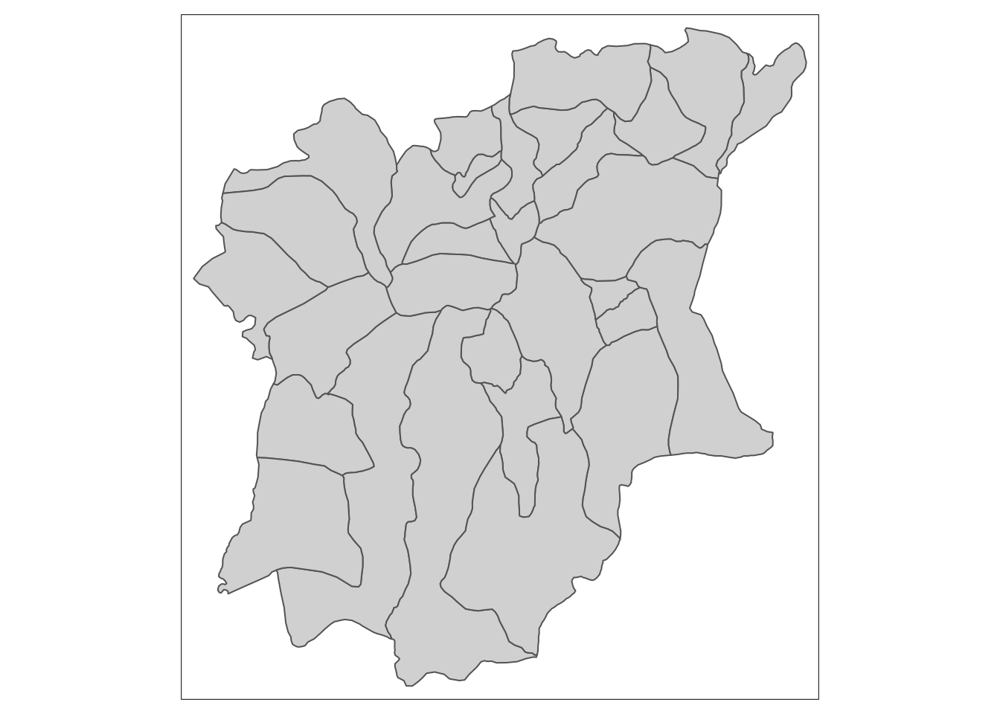
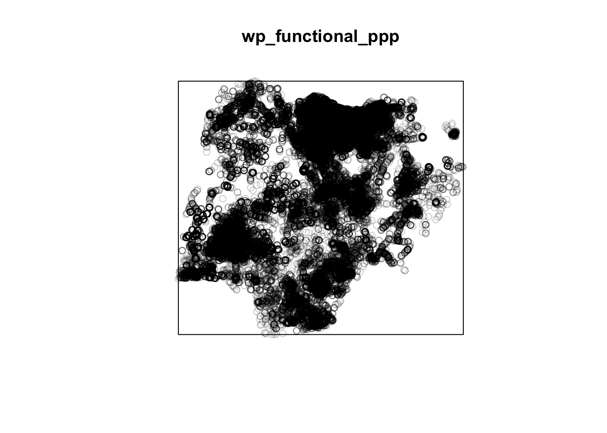
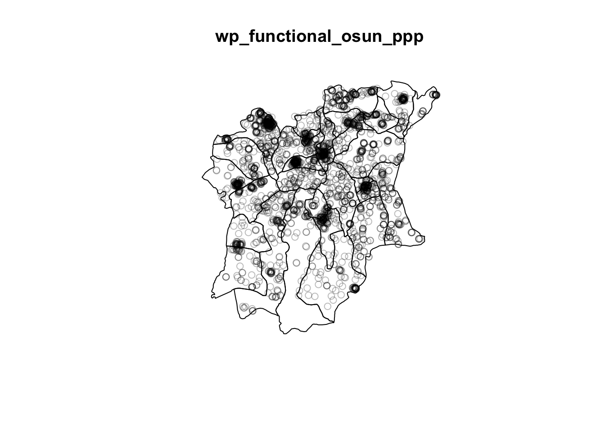
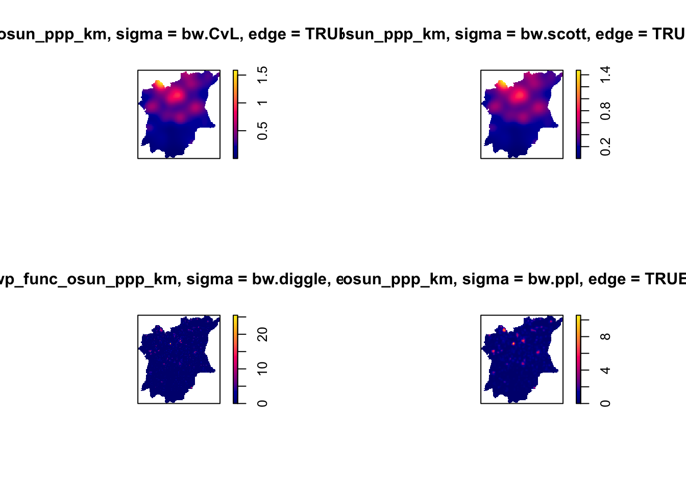
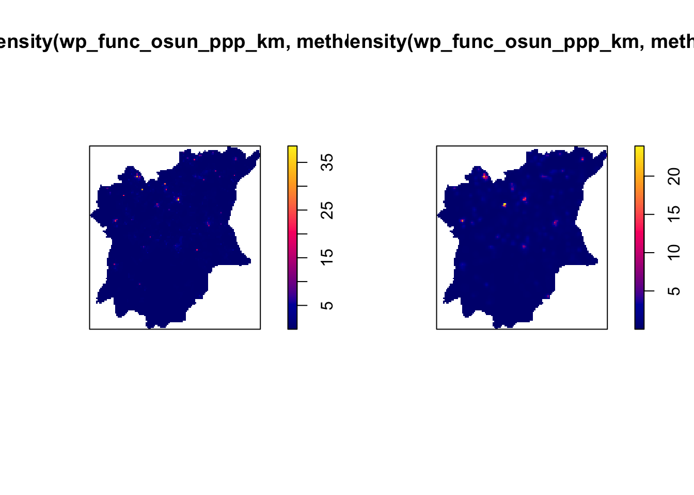
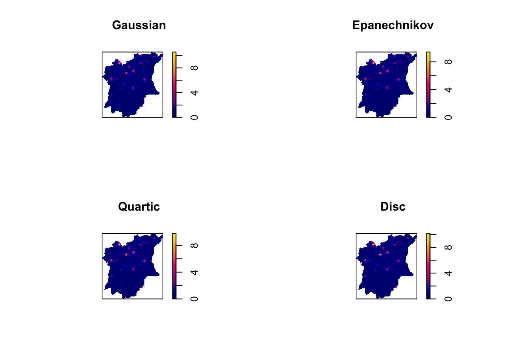
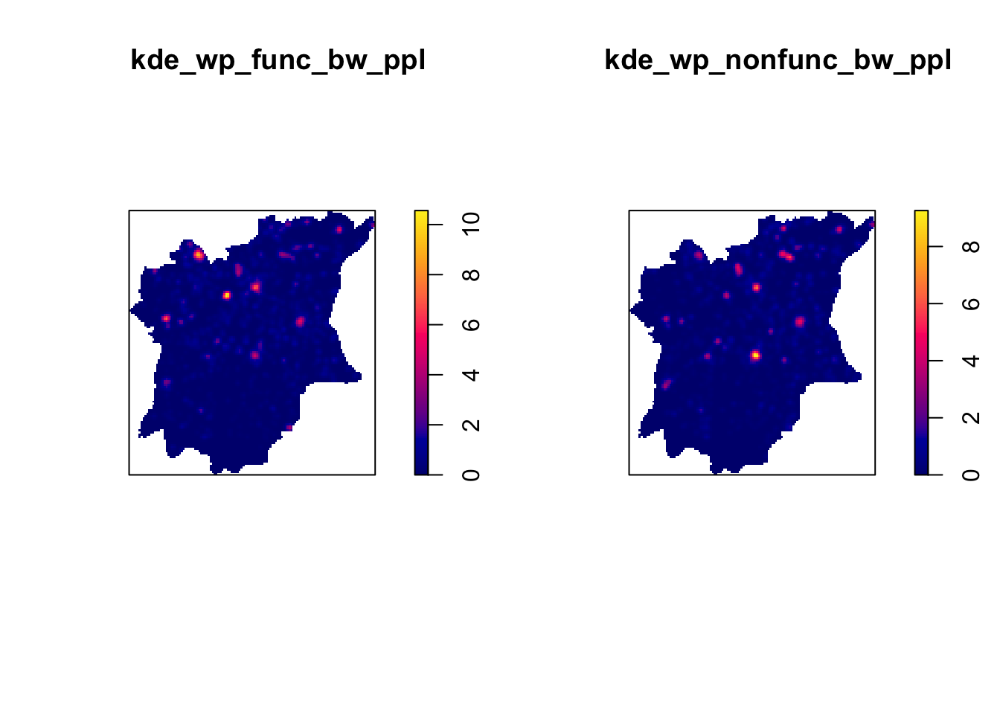

pacman::p_load(sf, tidyverse, funModeling, tmap, maptools, tmap, raster, spatstat)Take-Home Exercise 1
Installing Packages
Importing the Data
Import Geospatial Data
GeoBoundaries data set
geoNGA = st_read(dsn = "data/geospatial",
layer = "geoBoundaries-NGA-ADM2") %>%
st_transform(crs = 26392)Reading layer `geoBoundaries-NGA-ADM2' from data source
`/Users/michelle/Desktop/IS415/shelle-mim/IS415-GAA/Take-home_Exercise/TH1/data/geospatial'
using driver `ESRI Shapefile'
Simple feature collection with 774 features and 5 fields
Geometry type: MULTIPOLYGON
Dimension: XY
Bounding box: xmin: 2.668534 ymin: 4.273007 xmax: 14.67882 ymax: 13.89442
Geodetic CRS: WGS 84head(geoNGA, n=3)Simple feature collection with 3 features and 5 fields
Geometry type: MULTIPOLYGON
Dimension: XY
Bounding box: xmin: 538408.1 ymin: 116360.7 xmax: 1248985 ymax: 1079710
Projected CRS: Minna / Nigeria Mid Belt
shapeName Level shapeID shapeGroup shapeType
1 Aba North ADM2 NGA-ADM2-72505758B79815894 NGA ADM2
2 Aba South ADM2 NGA-ADM2-72505758B67905963 NGA ADM2
3 Abadam ADM2 NGA-ADM2-72505758B57073987 NGA ADM2
geometry
1 MULTIPOLYGON (((548795.5 11...
2 MULTIPOLYGON (((541412.3 12...
3 MULTIPOLYGON (((1248985 104...NGA data set
NGA <- st_read("data/geospatial/",
layer = "nga_admbnda_adm2") %>%
st_transform(crs = 26392) # transform to PCS of NigeriaReading layer `nga_admbnda_adm2' from data source
`/Users/michelle/Desktop/IS415/shelle-mim/IS415-GAA/Take-home_Exercise/TH1/data/geospatial'
using driver `ESRI Shapefile'
Simple feature collection with 774 features and 16 fields
Geometry type: MULTIPOLYGON
Dimension: XY
Bounding box: xmin: 2.668534 ymin: 4.273007 xmax: 14.67882 ymax: 13.89442
Geodetic CRS: WGS 84head(NGA, n=3)Simple feature collection with 3 features and 16 fields
Geometry type: MULTIPOLYGON
Dimension: XY
Bounding box: xmin: 538408.1 ymin: 116360.7 xmax: 1248985 ymax: 1079710
Projected CRS: Minna / Nigeria Mid Belt
Shape_Leng Shape_Area ADM2_EN ADM2_PCODE ADM2_REF ADM2ALT1EN ADM2ALT2EN
1 0.2370744 0.001523921 Aba North NG001001 Aba North <NA> <NA>
2 0.2624772 0.003531104 Aba South NG001002 Aba South <NA> <NA>
3 3.0753158 0.326867840 Abadam NG008001 Abadam <NA> <NA>
ADM1_EN ADM1_PCODE ADM0_EN ADM0_PCODE date validOn validTo
1 Abia NG001 Nigeria NG 2016-11-29 2019-04-17 <NA>
2 Abia NG001 Nigeria NG 2016-11-29 2019-04-17 <NA>
3 Borno NG008 Nigeria NG 2016-11-29 2019-04-17 <NA>
SD_EN SD_PCODE geometry
1 Abia South NG00103 MULTIPOLYGON (((548795.5 11...
2 Abia South NG00103 MULTIPOLYGON (((547286.1 11...
3 Borno North NG00802 MULTIPOLYGON (((1248985 104...Import Aspatial Data
wp_nga <- read_csv("data/aspatial/WPDEx.csv") %>%
filter(`#clean_country_name` == "Nigeria") #remove irrelavent data, keep the data smallConvert Aspatial to Geospatial
# use log and lat to make georeference col
wp_nga$Geometry = st_as_sfc(wp_nga$`New Georeferenced Column`)
head(wp_nga)# A tibble: 6 × 71
row_id #sour…¹ #lat_…² #lon_…³ #repo…⁴ #stat…⁵ #wate…⁶ #wate…⁷ #wate…⁸ #wate…⁹
<dbl> <chr> <dbl> <dbl> <chr> <chr> <chr> <chr> <chr> <chr>
1 429068 GRID3 7.98 5.12 08/29/… Unknown <NA> <NA> Tapsta… Tapsta…
2 222071 Federa… 6.96 3.60 08/16/… Yes Boreho… Well Mechan… Mechan…
3 160612 WaterA… 6.49 7.93 12/04/… Yes Boreho… Well Hand P… Hand P…
4 160669 WaterA… 6.73 7.65 12/04/… Yes Boreho… Well <NA> <NA>
5 160642 WaterA… 6.78 7.66 12/04/… Yes Boreho… Well Hand P… Hand P…
6 160628 WaterA… 6.96 7.78 12/04/… Yes Boreho… Well Hand P… Hand P…
# … with 61 more variables: `#facility_type` <chr>,
# `#clean_country_name` <chr>, `#clean_adm1` <chr>, `#clean_adm2` <chr>,
# `#clean_adm3` <chr>, `#clean_adm4` <chr>, `#install_year` <dbl>,
# `#installer` <chr>, `#rehab_year` <lgl>, `#rehabilitator` <lgl>,
# `#management_clean` <chr>, `#status_clean` <chr>, `#pay` <chr>,
# `#fecal_coliform_presence` <chr>, `#fecal_coliform_value` <dbl>,
# `#subjective_quality` <chr>, `#activity_id` <chr>, `#scheme_id` <chr>, …wp_sf <- st_sf(wp_nga, crs=4326)
wp_sfSimple feature collection with 95008 features and 70 fields
Geometry type: POINT
Dimension: XY
Bounding box: xmin: 2.707441 ymin: 4.301812 xmax: 14.21828 ymax: 13.86568
Geodetic CRS: WGS 84
# A tibble: 95,008 × 71
row_id `#source` #lat_…¹ #lon_…² #repo…³ #stat…⁴ #wate…⁵ #wate…⁶ #wate…⁷
* <dbl> <chr> <dbl> <dbl> <chr> <chr> <chr> <chr> <chr>
1 429068 GRID3 7.98 5.12 08/29/… Unknown <NA> <NA> Tapsta…
2 222071 Federal Minis… 6.96 3.60 08/16/… Yes Boreho… Well Mechan…
3 160612 WaterAid 6.49 7.93 12/04/… Yes Boreho… Well Hand P…
4 160669 WaterAid 6.73 7.65 12/04/… Yes Boreho… Well <NA>
5 160642 WaterAid 6.78 7.66 12/04/… Yes Boreho… Well Hand P…
6 160628 WaterAid 6.96 7.78 12/04/… Yes Boreho… Well Hand P…
7 160632 WaterAid 7.02 7.84 12/04/… Yes Boreho… Well Hand P…
8 642747 Living Water … 7.33 8.98 10/03/… Yes Boreho… Well Mechan…
9 642456 Living Water … 7.17 9.11 10/03/… Yes Boreho… Well Hand P…
10 641347 Living Water … 7.20 9.22 03/28/… Yes Boreho… Well Hand P…
# … with 94,998 more rows, 62 more variables: `#water_tech_category` <chr>,
# `#facility_type` <chr>, `#clean_country_name` <chr>, `#clean_adm1` <chr>,
# `#clean_adm2` <chr>, `#clean_adm3` <chr>, `#clean_adm4` <chr>,
# `#install_year` <dbl>, `#installer` <chr>, `#rehab_year` <lgl>,
# `#rehabilitator` <lgl>, `#management_clean` <chr>, `#status_clean` <chr>,
# `#pay` <chr>, `#fecal_coliform_presence` <chr>,
# `#fecal_coliform_value` <dbl>, `#subjective_quality` <chr>, …Projection Transformation
# Transform to appropriate projected coordinate system of Nigeria
wp_sf <- wp_sf %>%
st_transform(crs = 26392)Data Cleaning
Select relevant cols
# select adm1 and adm2 cols (cols 3-4 and 8-9)
NGA <- NGA %>%
dplyr::select(c(3:4, 8:9))Check for and Remove Duplicate Names
NGA$ADM2_EN[duplicated(NGA$ADM2_EN)==TRUE][1] "Bassa" "Ifelodun" "Irepodun" "Nasarawa" "Obi" "Surulere"=> shows LGAs with the same name
duplicated_LGA <- NGA$ADM2_EN[duplicated(NGA$ADM2_EN)==TRUE]
duplicated_indices <- which(NGA$ADM2_EN %in% duplicated_LGA)
for (ind in duplicated_indices) {
NGA$ADM2_EN[ind] <- paste(NGA$ADM2_EN[ind], NGA$ADM1_EN[ind], sep=", ")
}Data Wrangling
# Look at distribution of the data
#freq(data = wp_sf, input='#status_clean')wp_sf_nga <- wp_sf %>%
rename(status_clean = '#status_clean') %>%
dplyr::select(status_clean) %>%
mutate(status_clean = replace_na(
status_clean, "unknown"
))wp_functional_sf <- wp_sf_nga %>%
filter(status_clean %in%
c("Functional",
"Functional but not in use",
"Functional but needs repair"))wp_nonfunctional_sf <- wp_sf_nga %>%
filter(status_clean %in%
c("Abandoned/Decommissioned",
"Abandoned",
"Non-Functional due to dry season",
"Non-Functional",
"Non functional due to dry season"))wp_unknown_sf <- wp_sf_nga %>% filter(`status_clean` %in%
c("unknown"))NGA_wp_sf <- NGA %>%
mutate(`total_wp` = lengths(
st_intersects(NGA, wp_sf_nga)
)) %>%
mutate(`wp_functional_sf` = lengths(
st_intersects(NGA, wp_functional_sf)
)) %>%
mutate(`wp_nonfunctional_sf` = lengths(
st_intersects(NGA, wp_nonfunctional_sf)
)) %>%
mutate(`wp_unknown_sf` = lengths(
st_intersects(NGA, wp_unknown_sf)
))glimpse(NGA)Rows: 774
Columns: 5
$ ADM2_EN <chr> "Aba North", "Aba South", "Abadam", "Abaji", "Abak", "Abaka…
$ ADM2_PCODE <chr> "NG001001", "NG001002", "NG008001", "NG015001", "NG003001",…
$ ADM1_EN <chr> "Abia", "Abia", "Borno", "Federal Capital Territory", "Akwa…
$ ADM1_PCODE <chr> "NG001", "NG001", "NG008", "NG015", "NG003", "NG011", "NG02…
$ geometry <MULTIPOLYGON [m]> MULTIPOLYGON (((548795.5 11..., MULTIPOLYGON (…osun <- NGA %>%
filter(ADM1_EN %in%
c("Osun"))
qtm(osun)
glimpse(NGA_wp_sf)Rows: 774
Columns: 9
$ ADM2_EN <chr> "Aba North", "Aba South", "Abadam", "Abaji", "Abak…
$ ADM2_PCODE <chr> "NG001001", "NG001002", "NG008001", "NG015001", "N…
$ ADM1_EN <chr> "Abia", "Abia", "Borno", "Federal Capital Territor…
$ ADM1_PCODE <chr> "NG001", "NG001", "NG008", "NG015", "NG003", "NG01…
$ geometry <MULTIPOLYGON [m]> MULTIPOLYGON (((548795.5 11..., MULTI…
$ total_wp <int> 17, 71, 0, 57, 48, 233, 34, 119, 152, 66, 39, 135,…
$ wp_functional_sf <int> 7, 29, 0, 23, 23, 82, 16, 72, 79, 18, 25, 54, 28, …
$ wp_nonfunctional_sf <int> 9, 35, 0, 34, 25, 42, 15, 33, 62, 26, 13, 73, 35, …
$ wp_unknown_sf <int> 1, 7, 0, 0, 0, 109, 3, 14, 11, 22, 1, 8, 0, 37, 88…write_rds(NGA_wp_sf, "data/rds/NGA_wp_sf.rds")Exploratory Spatial Data Analysis
Derive Kernel Density Maps
Conversion to ppp data type
# Convert sf to sp's spatial class
wp_functional_spatial <- as_Spatial(wp_functional_sf)
wp_nonfunctional_spatial <- as_Spatial(wp_nonfunctional_sf)
osun_spatial <- as_Spatial(osun)wp_functional_spatialclass : SpatialPointsDataFrame
features : 52148
extent : 29322.63, 1218553, 33758.37, 1092629 (xmin, xmax, ymin, ymax)
crs : +proj=tmerc +lat_0=4 +lon_0=8.5 +k=0.99975 +x_0=670553.98 +y_0=0 +a=6378249.145 +rf=293.465 +towgs84=-92,-93,122,0,0,0,0 +units=m +no_defs
variables : 1
names : status_clean
min values : Functional
max values : Functional but not in use osun_spatialclass : SpatialPolygonsDataFrame
features : 30
extent : 176503.2, 291043.8, 331434.7, 454520.1 (xmin, xmax, ymin, ymax)
crs : +proj=tmerc +lat_0=4 +lon_0=8.5 +k=0.99975 +x_0=670553.98 +y_0=0 +a=6378249.145 +rf=293.465 +towgs84=-92,-93,122,0,0,0,0 +units=m +no_defs
variables : 4
names : ADM2_EN, ADM2_PCODE, ADM1_EN, ADM1_PCODE
min values : Aiyedade, NG030001, Osun, NG030
max values : Osogbo, NG030030, Osun, NG030 wp_functional_sp <- as(wp_functional_spatial, "SpatialPoints")
wp_nonfunctional_sp <- as(wp_nonfunctional_spatial, "SpatialPoints")
osun_sp <- as(osun_spatial, "SpatialPolygons")wp_functional_spclass : SpatialPoints
features : 52148
extent : 29322.63, 1218553, 33758.37, 1092629 (xmin, xmax, ymin, ymax)
crs : +proj=tmerc +lat_0=4 +lon_0=8.5 +k=0.99975 +x_0=670553.98 +y_0=0 +a=6378249.145 +rf=293.465 +towgs84=-92,-93,122,0,0,0,0 +units=m +no_defs wp_functional_ppp <- as(wp_functional_sp, "ppp")
wp_nonfunctional_ppp <- as(wp_nonfunctional_sp, "ppp")wp_functional_pppPlanar point pattern: 52148 points
window: rectangle = [29322.6, 1218553.3] x [33758.4, 1092628.9] unitsplot(wp_functional_ppp)
Check for/Deal with duplicated points
any(duplicated(wp_functional_ppp))[1] FALSEany(duplicated(wp_nonfunctional_ppp))[1] FALSESince there are no duplicated points, no further action needed.
Create Owin of Osun
Create Owin to bound data within
osun_owin <- as(osun_sp, "owin")plot(osun_owin)
wp_functional_osun_ppp = wp_functional_ppp[osun_owin]
wp_nonfunctional_osun_ppp = wp_nonfunctional_ppp[osun_owin]plot(wp_functional_osun_ppp)plot(wp_nonfunctional_osun_ppp)
Kernel Density Estimation
# Convert to km
wp_func_osun_ppp_km <- rescale(wp_functional_osun_ppp, 1000, "km")
wp_nonfunc_osun_ppp_km <- rescale(wp_nonfunctional_osun_ppp, 1000, "km")# Choosing automatic bandwith method
par(mfrow=c(2,2))
plot(density(wp_func_osun_ppp_km,
sigma=bw.CvL,
edge=TRUE,
kernel="gaussian"))
plot(density(wp_func_osun_ppp_km,
sigma=bw.scott,
edge=TRUE,
kernel="gaussian"))
plot(density(wp_func_osun_ppp_km,
sigma=bw.diggle,
edge=TRUE,
kernel="gaussian"))
plot(density(wp_func_osun_ppp_km,
sigma=bw.ppl,
edge=TRUE,
kernel="gaussian"))
Will choose bw.ppl, since we appear to be working with predominately tight clusters, and bw.ppl and bw.diggle give more appropriate values when such is the case. I chose bw.ppl as it shows up better than bw.diggle, which is slightly difficult to see.
# Choosing kernel method
par(mfrow=c(2,2))
plot(density(wp_func_osun_ppp_km,
sigma=bw.ppl,
edge=TRUE,
kernel="gaussian"),
main="Gaussian")
plot(density(wp_func_osun_ppp_km,
sigma=bw.ppl,
edge=TRUE,
kernel="epanechnikov"),
main="Epanechnikov")
plot(density(wp_func_osun_ppp_km,
sigma=bw.ppl,
edge=TRUE,
kernel="quartic"),
main="Quartic")
plot(density(wp_func_osun_ppp_km,
sigma=bw.ppl,
edge=TRUE,
kernel="disc"),
main="Disc")
Since there are no significant differences observed across different kernels, we will use guassian kernel, the default kernel method.
par(mfrow=c(1,2))
# Try adaptive bandwith
# each datapoint have its own threshold => tends to be more pixelised
plot( adaptive.density(wp_func_osun_ppp_km, method="voronoi"))
# define diff num of neighbour you want, and calc distance until converge => tends to be smoother
plot( adaptive.density(wp_func_osun_ppp_km, method="kernel"))
Adaptive also does not give good results, so will use fixed with bw.ppl and guassian kernel.
kde_wp_func_bw_ppl <- density(wp_func_osun_ppp_km,
sigma=bw.ppl,
edge=TRUE,
kernel="gaussian")
kde_wp_nonfunc_bw_ppl <- density(wp_nonfunc_osun_ppp_km,
sigma=bw.ppl,
edge=TRUE,
kernel="gaussian")Final Kernel Density Estimation Maps
par(mfrow=c(1,2))
plot(kde_wp_func_bw_ppl)
plot(kde_wp_nonfunc_bw_ppl)Display KDE Maps on OpenStreetMap
Convert to raster for tmap display
# Convert to Gridded, then to raster
gridded_kde_wp_func_bw_ppl <- as.SpatialGridDataFrame.im(kde_wp_func_bw_ppl)
gridded_kde_wp_nonfunc_bw_ppl <- as.SpatialGridDataFrame.im(kde_wp_nonfunc_bw_ppl)
raster_kde_wp_func_bw_ppl <- raster(gridded_kde_wp_func_bw_ppl)
raster_kde_wp_nonfunc_bw_ppl <- raster(gridded_kde_wp_nonfunc_bw_ppl)
# Assign CRS info
projection(raster_kde_wp_func_bw_ppl) <- CRS("+init=EPSG:26392 +units=km")
projection(raster_kde_wp_nonfunc_bw_ppl) <- CRS("+init=EPSG:26392 +units=km")
raster_kde_wp_func_bw_pplclass : RasterLayer
dimensions : 128, 128, 16384 (nrow, ncol, ncell)
resolution : 0.8948485, 0.9616045 (x, y)
extent : 176.5032, 291.0438, 331.4347, 454.5201 (xmin, xmax, ymin, ymax)
crs : +init=EPSG:26392 +units=km
source : memory
names : v
values : -4.165277e-16, 10.55944 (min, max)Display on tmap OpenStreetMap
tmap_mode('view')
#func_kde <-
tm_basemap("OpenStreetMap")+
tm_view(set.zoom.limits=c(9, 16)) +
tm_shape(raster_kde_wp_func_bw_ppl) +
tm_raster("v", palette="YlOrRd") +
tm_layout(legend.position = c("right", "bottom"), frame = FALSE)#nonfunc_kde <-
tm_basemap("OpenStreetMap")+
tm_view(set.zoom.limits=c(9, 16)) +
tm_shape(raster_kde_wp_nonfunc_bw_ppl) +
tm_raster("v", palette="YlOrRd") +
tm_layout(legend.position = c("right", "bottom"), frame = FALSE)# tmap_arrange(func_kde, nonfunc_kde, asp=1, ncol=2)Describe Spatial Patterns
nigeria no water :(